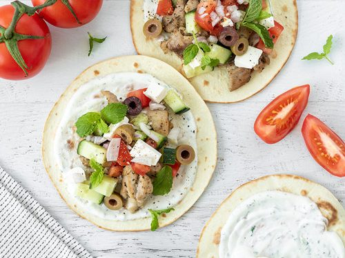

TACOS

DESCRIPTION
This is a recipie for tacos.
INGREDIANTS
- 2 teaspoons olive oil
- 3 tablespoons finely chopped onion
- 1 (15.5 ounce) can black beans, drained and rinsed
- 1 (10 ounce) can whole kernel corn, drained
- ¼ cup salsa
- 1 tablespoon brown sugar
- ¼ teaspoon red pepper flakes
- 2 tablespoons butter, or as needed
- 8 (8 inch) flour tortillas
- 1 ½ cups shredded Monterey Jack cheese
STEPS
- Heat olive oil in a large saucepan over medium heat.
- Cook and stir onion in hot oil until softened, about 2 minutes. Stir in beans and corn, then add salsa, brown sugar, and red pepper flakes; mix well.
- Cook until heated through, about 3 minutes. Remove from heat.
- Melt about 1 1/2 teaspoons butter in a large skillet over medium heat
- Place a tortilla in the skillet
- Sprinkle with 1/4 of the Monterey Jack cheese, then top with 1/4 of the bean mixture
- Place another tortilla on top; cook until the bottom is golden, then carefully flip and cook until the other side is golden
- Repeat with remaining tortillas and filling.